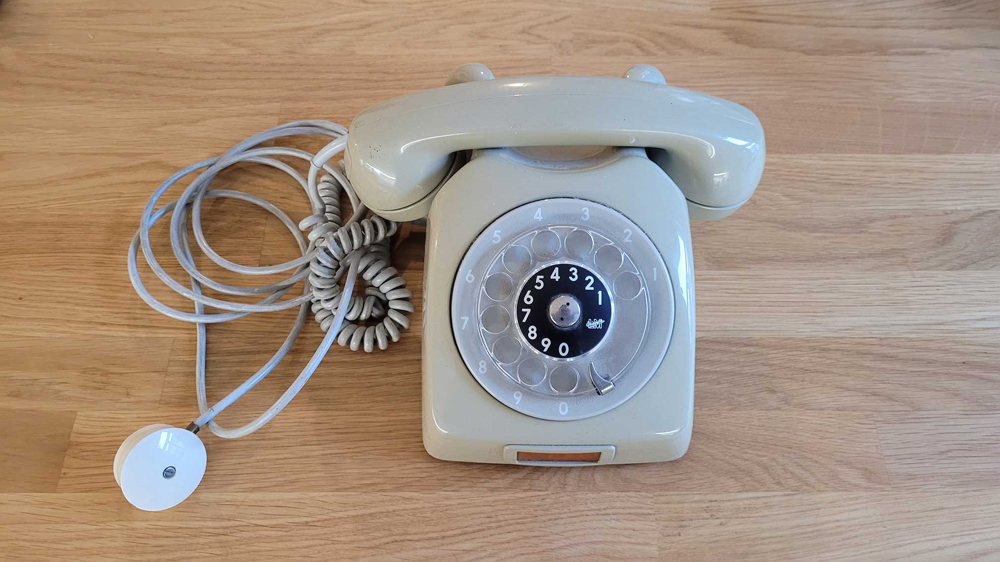

How it works
The telephone is in idle state, when the handset is placed on the phone and the display shows date, time, alarm,
and "Mode: 0". In this state you can dial in any number and the last number dialled will be displayed on the
bottom right of the display ("Dial:"). By picking up the handset, the telephone will switch to a certain mode -
depending on
the number dialled before. Return back to the idle mode by replacing the handset back on the telephone.
1: Alarm Mode
While in idle mode (display shows "Mode: 0"), dial in number 1 and pick up the handset. In this mode you can set an alarm by dialling in the time you wish to let the phone ring. Enter the time in four-digit 24-hour format (hh:mm), confirm and activate by placing the handset back on the telephone. When the set alarm time has come, the telephone starts ringing. Pick up the handset to make the ringing stop, replace the handset to deactivate the alarm and return to idle mode. Example: if you wish to wake up at 7 o'clock in the morning, dial in 0-7-0-0 and place the handset back on the telephone.
2 - 9: Expandable Modes
1: Alarm Mode
While in idle mode (display shows "Mode: 0"), dial in number 1 and pick up the handset. In this mode you can set an alarm by dialling in the time you wish to let the phone ring. Enter the time in four-digit 24-hour format (hh:mm), confirm and activate by placing the handset back on the telephone. When the set alarm time has come, the telephone starts ringing. Pick up the handset to make the ringing stop, replace the handset to deactivate the alarm and return to idle mode. Example: if you wish to wake up at 7 o'clock in the morning, dial in 0-7-0-0 and place the handset back on the telephone.
2 - 9: Expandable Modes